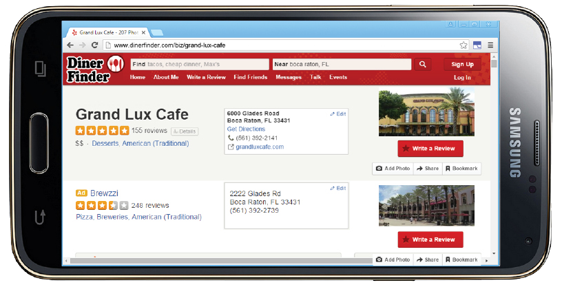
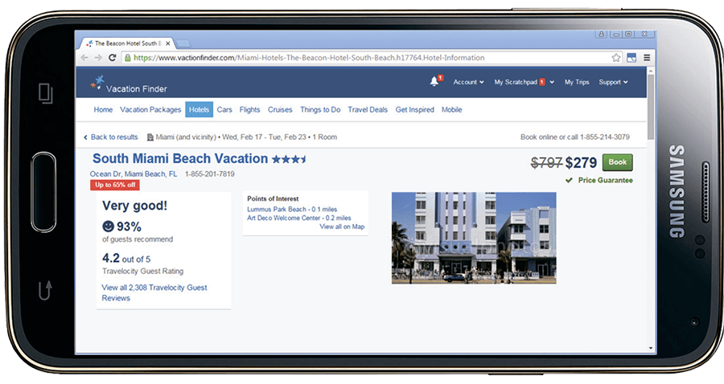
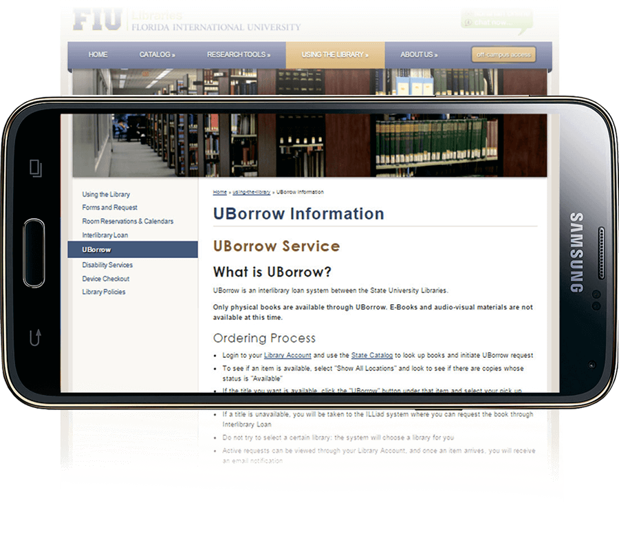
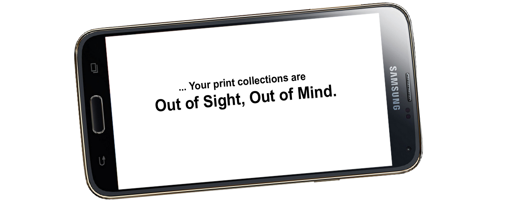
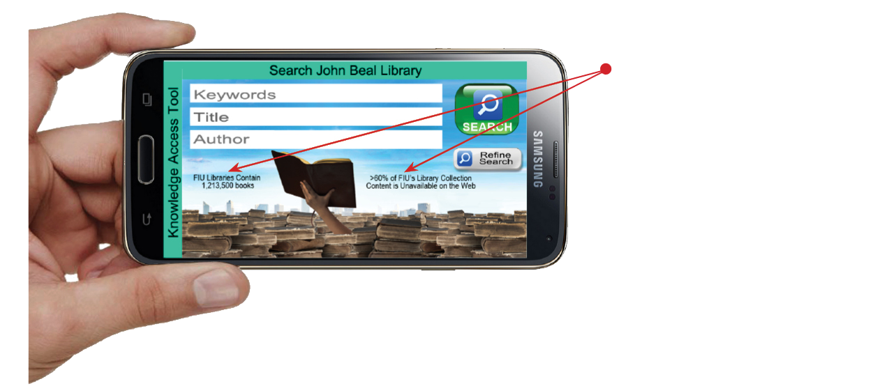

Stacks View
Stacks View
Knowledge Access Toolkit, the Best Way to Promote the Stacks to Students
Your Library's Greatest Assets are Finally in the Spotlight
in the Digital World that Students Understand

For a dozen years, this shrinking student appreciation of the immense value in their institution's library's print collections has been a big problem that no one wants to talk about. Efforts to ameliorate this problem include brief mentions in freshmen orientation packets and research projects assigned by some faculty members, but the most common and most effective methods used to get the digital generation to try something different is to use lots of visuals. Just as restaurants publish images of their dining areas and their menu items online, with the introduction of KIC Stacks View, libraries can now make images of their stacks and bibliographic records available visually online as well.
The digital age has brought with it many changes, most desirable, some less so. When students enter higher education, they naturally expect far greater sophistication than they experienced in high school. To them, that means that everything that can be digital, should be digital. It is not obvious to them that the great value in the vast print collections in their college libraries is in the content. They probably don't know that it's cost prohibitive to purchase a digital version of every print item. Their appreciation of the library's stacks must be built from scratch, The best starting point ... their digital world.

Students can view any shelf of your entire print collection with KAT, virtually.
Students expect academic libraries to be digital. Their expectations are not about efficiency, effectiveness or cost. They are simply common digital age assumptions.

Search Screen
Bibliography View Screen
Shelf View Screen
KAT reports book availability if supported by your ILS
KAT displays book cover images when available
Use KAT's Library Search screen to find a book by keyword, title or author, then touch to view bibliographic information for any book in the search results.
Zoom from Stacks View to Shelf View and touch to view bibliographic information for any book.

Professor: G. Patterson
Course ID: QMB4061
A Picture is Worth a Thousand Words...
The undeniable power of imagery is frequently seen in action in the digital age, with the 'venue' of preference being the ubiquitous smart phone.
For example, restaurants must either have huge national advertising campaigns, like McDonald's and Chipotle, or they must give their potential patrons visual experiences via TV & the web that are as close to being at the restaurant as possible. They deluge of imagery helps people visualize themselves at the restaurant, and that visualization triggers a degree of comfort in going there.
For restaurants, these kinds of visuals work magic.
... Sometimes Thousands of Words
It can be very difficult to make new healthy habits. Today's Digital Age college students are not in the habbit of visiting their university's libraries. Perhaps it would help if students could see the stacks on their smart devices...
Advertising with minimal imagery, like the vacation destination listing above, attracts only the most adventurous vacationers and people that have already been encouraged by friends or family. Getting people to habitually consult a vacation planning site and to try new vacation destinations without recommendations from friends and family requires a lot more visual support than shown above.
To establish a habit of consulting a vacation listing/reviewing site before commiting to a vacation plan, sites like TripAdvisor use lots of appealing imagery.
Without Imagery of Your Stacks ...
Without great imagery to help, it is a big challenge convincing students that your print collections are a huge knowledge reserve. Students need to know 1) the number of books in your collection, 2) that they cannot find all the information and knowledge they need on the internet; 3) that over half of the content in their libraries' print collections is not available on the Internet; and 4) that their education will be broader and deeper if they utilize their libraries' print collections.
FIU's Web-based Information About their Stacks and How it is Presented:
The web page above is professional and informative, but it lacks the dynamism and ongoing utility needed to become a "habit". By combining searchable bibliographic information with complete, browsable images of your stacks, faculty recommended book lists and a reservation system for your KIC stations, KAT is habit-forming.
If students don't habitually see the stacks, they won't regularly think about the stacks. If students don't know about the stacks, they won't go to the stacks. KAT Stacks View is the most efficient and effective way to get them to see the stacks without first going to the stacks.
Promote Your Print Collections as the Key to a More Balanced and a Deeper Education
Search Screen
Choose the text that goes on KAT's Search screen and deliver important messages to your student and faculty patrons in context where it makes the most impact and at the moment when they can appreciate it most.
Faculty Book Lists
Get students to habitually see your stacks by publishing faculty-recommended book lists on KAT.
Professor Patterson distributes the required reading for his course to students electronically. His book selections are in the library and viewable from KAT Stacks View.
Students can verify the location of the books selected and reserve a scanning station in their library to scan excerpts for their course work, all within the KIC Stacks View application.
Professor Gordon Patterson
QMB4061 Recommended Reading
Search Bibliographic Database on Any KIC System
Bibliography View Screen
Just about every PC, tablet and smart phone provides access to Google, Wikipedia, etc. Your stacks should be just as accessible!
KIC systems can also be configured with KAT, so even students who don't have a smart phone or tablet can search your stacks from any KIC system your library owns.
Promote Your Print Collections with KAT Stacks View
Width KAT Stacks View, students can use any smart device to "visit" your stacks from anywhere, even collaborate over which books might be helpful. Then they can reserve a KIC system for scanning excerpts and go the library to get the book(s), scan some pages, and maybe browse for more books, with the bibliographic records readily accessible.
KIC & KAT Go Hand-in-Hand
Use the popularity of KIC to promote usage of KAT, which is turn will improve student awareness of the stacks.
KIC Stations View Screen
KIC Station Reservation Screen
Students can scroll through the KIC stations at your library to find the nearest KIC station, or the one that best suits their need. Then a simple touch of the "RESERVE this Scanner" button shows the KIC Station Reservation Screen where the student can select the desired reservation day and time.
Bibliography View Screen
Students can use KAT as their own personal portable bibliography search system.
How DLSG Captures Your Library's Stacks View
CAPTURE SHELF IMAGES
We use a multi-camera digitization system on wheels to capture individual, high resolution images of each shelf in your library.
CLIP SHELF IMAGES
Images are all clipped to exactly frame one shelf.
ZONE BOOK SPINES
The book's spines are automatically zoned so that they can be individually selected and their bibliographic data viewed, and so that they can be individually extracted and built into virtual bookshelves of faculty reading lists.
OCR BOOK SPINES
The bibliography records' IDs are located and the text extracted and corrected for virtually 100% accuracy.
RETRIEVE MARC 21 DATA
The library provides its bibliographic data in MARC21 format.
ALTERNATE SPINE IMAGE
For MARC21 records without a matching book spine, KAT creates a "CGI" image of the spine and inserts it into the bookshelf.
UPLOAD TO CLOUD
All this book shelf imagery is uploaded to KAT servers in the cloud for fast access.
Book covers are uploaded.
Are you library's print collections getting enough use to justify their cost?
The cost of books and journals certainly hasn't fallen in the past 20 years, and it is likely that the majority of their content remains unavailable on the web, yet students typically don't know this important fact about your print collections.
Before you move too many volumes offsite, let KAT Stacks View help promote increased use of your print collections.
Scroll through your library's stacks virtually on any browser, search and view bibliographic data, reserve a KIC system and more...
KAT Equipment Requirements
KAT is Cloud-based, so no servers or other onsite computers are necessary. KAT can be accessed by any PC, tablet or smart device that has access to the Web.
Microsoft Azure
Total Up-Time: 99.9936%
Total Number of Servers: 11,000,000
When a WiFi-connected smartphone is used in the stacks to provide assistance in locating materials, to get instant access to bibliographic records, to search for related materials once a volume has been found, and to locate a KIC system for digitizing content, the WiFi bandwidth used will typically be in short bursts of one megabyte per second.
| KAT Activity | Average Download Bytes per Scan | Recommended Min. WiFi Bandwidth |
|---|---|---|
| KIC Reservation Screens | 0.2 megabytes | 0.2 megabytes per second, intermittent |
| KAT Search Screen & Bibliographic Screens | 0.1 megabytes | 0.1 megabytes per second, intermittent |
| KAT Stacks View & KAT Shelf View | 1.0 megabytes | 1 megabyte per second, intermittent |
Considering moving a large portion of your collections off-Site?
Most libraries have a lot of volumes that haven't been checked out in a long time, and libraries certainly can increase their relevance in the digital age by adding collaboration and study spaces. So it is rather compelling to cull books from the library.
economics at Harvard because of its immense collection of books on economics. It's a difficult argument to ignore. However, relevance in the digital age is not easily pursued without compromises.
The main argument against culling/moving books off-site is the unknown, but potentially great value that your unabridged collection can have in inciting the very uncommon, but equally special epiphany that a researcher can have while browsing the stacks and perusing the very books that are targeted for culling. The current head of the IMF in Beijing and professor of economics at Harvard University, choose to study
If your need to repurpose a lot of stacks space outweighs the value of keeping your full collection browsable, then before you proceed with the culling, let DLSG photograph your entire collection as it is today and make it browsable with KAT stacks view. Students abd researchers can browse your complete collection virtually, instantly see any book's bibliography by touching its spine, and with another touch, read books that have been digitized.
To Cull, or Not to Cull